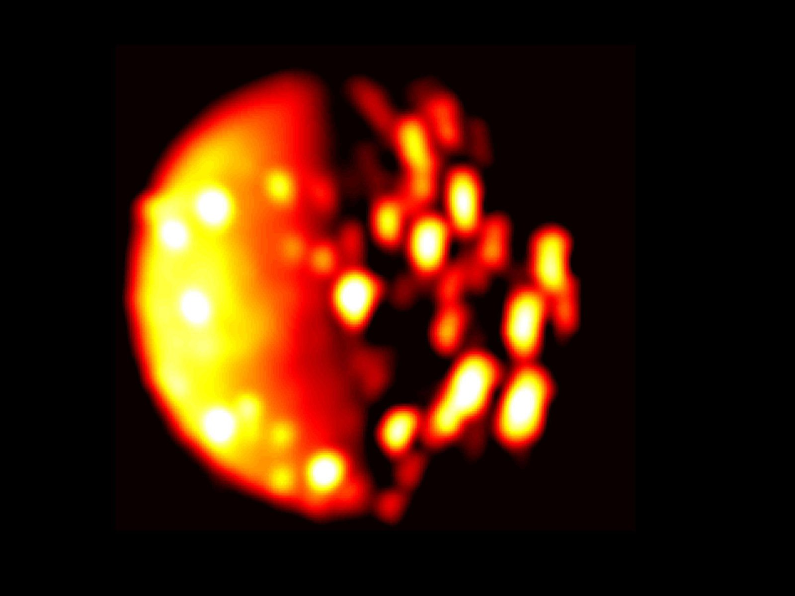

Jupiter's moons from space in infrared
Well done, your research proposal was accepted!
Jupiter is in our solar system, so you might think we've discovered all we can about it already. However, as with most of the objects in our solar system, there is still much to learn about its formation history and geology. Observing from space will give you much higher quality data than you could achieve on Earth, and as one of our neighbours, research is definately encouraged!
You may actually want to join the team working on Nasa's Europa Clipper, a spacecraft that is set to launch in 2024. It will settle in orbit around Jupiter, and will study the moon Europa as it passes by. The infrared camera on board will be known as The Europa Thermal Imaging System (E-THEMIS), and researchers are hoping to use it for many different studies of the geology of Europa. Among other interesting geological features to be studied, eruptions of liquid water can be observed in infrared. Since water is one of the vital ingredients to life here of Earth, scientist's hope that if they find it on Europa they may also find extra terrestrial life!
